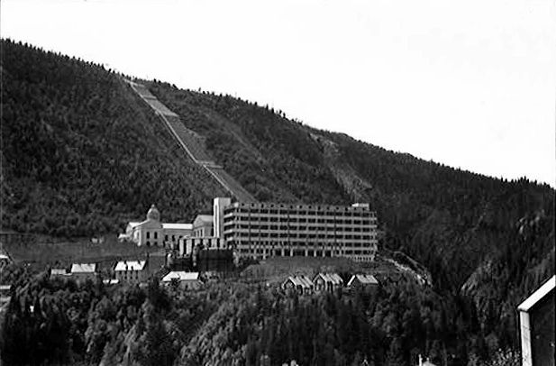
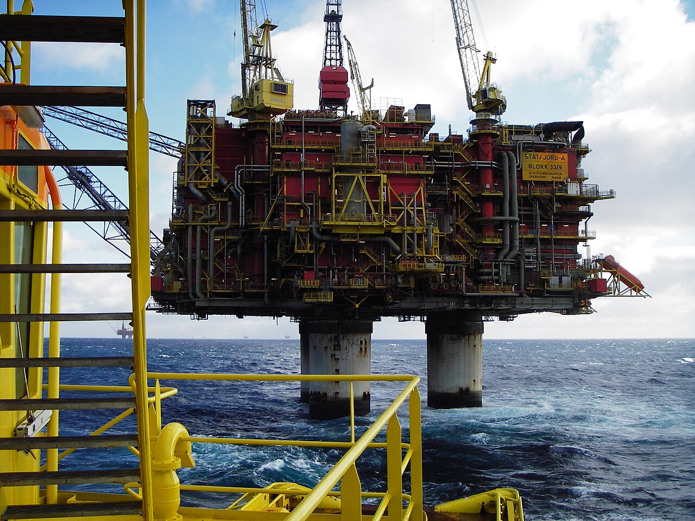
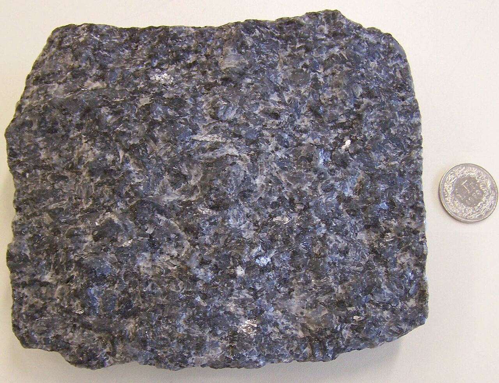
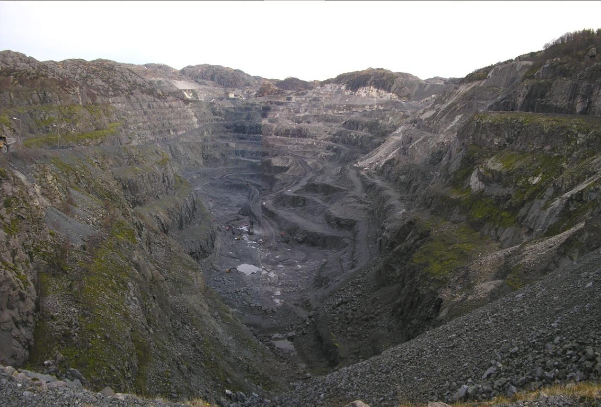
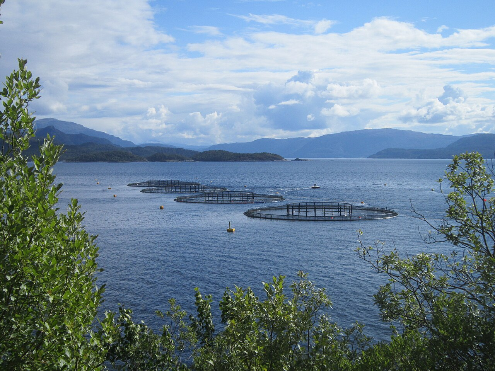

Norges Ressursparadoks
Velferd bygget på naturressurser – en kontinuerlig balansegang mellom økonomi, energi, matproduksjon, klima og natur.
En er alt vi kan bruke for å skaffe oss noe vi trenger. Dette inkluderer både naturressurser (det som finnes i naturen) og menneskelige ressurser (kunnskap og teknologi som gjør en naturforekomst utnyttbar). Norges velstand er uløselig knyttet til vår evne til å utnytte naturressurser – fra fisk og skog, til vannkraften som industrialiserte landet, og olje og gass som skapte Oljefondet.
♾️ Fornybare
Tar kort tid å fornye og blir ikke oppbrukt (sol, vind, vannkraft).
🌱 Betinget fornybare
Fornyes hvis de forvaltes riktig, men kan ødelegges (matjord, skog, fisk).
🔋 Ikke-fornybare
Lagerressurser som dannes svært sakte (olje, gass, kull, mineraler).
Næringslivets tre sektorer
- : Utnytter naturen direkte (jordbruk, skogbruk, fiske).
- : Bearbeider råvarer (industri, bergverk, kraftforsyning).
- : Tjenesteyting, handel, undervisning og transport (her jobber de fleste i dag).
- Råvarer: Nærhet til ressursen (viktigst for primærnæring og gruvedrift).
- Energi: Nærhet til rimelig, ren strøm (avgjørende for norsk kraftkrevende industri).
- Marked: Nærhet til kundene (viktigst for tjenester og handel).
⚡ Super-sammendrag · Ressurser & næringsliv
Naturressurser deles inn i fornybare, betinget fornybare og ikke-fornybare ressurser. Teknologi og lokaliseringsfaktorer (råvarer, energi og marked) avgjør hvor og hvordan ressursene utnyttes.
Vannkraftnasjonen og det fossile paradokset

Norge har perfekte naturgitte forutsetninger for vannkraft: store høydeforskjeller, mye nedbør (særlig på Vestlandet) og fjell som gir mulighet for regulerbare vannmagasiner. Rundt 90 % av strømproduksjonen kommer fra vannkraft (ca. 140 TWh fra rundt 1 780 kraftverk), og inkludert vindkraft er hele 98 % av norsk strøm fornybar. Når vannet faller fra stor høyde gjennom rør (trykksjakt), driver vannets bevegelsesenergi en turbin og en generator som produserer elektrisk strøm.
Med en elbilandel på 88 % blant nye personbiler (verdensrekord) framstår Norge som en grønn foregangsnasjon. Men bildet er ufullstendig – fordi strøm og total energi ikke er det samme.
Norges paradoks: Grønn strøm, men 45 % fossil totalenergi
Når vi regner med drivstoff til transport, industri og offshore-plattformer, er nesten halvparten av energibruken fossil.
90–98 %
Fornybar strømproduksjon
~140 TWh vannkraft + ~17 TWh vindkraft driver lys, varme, industri og elbiler.
45 %
Fossilt totalt energiforbruk
Tilsvarer ca. 124 TWh årlig fra olje/gass-plattformer, tungtransport, skipsfart, luftfart og industri.
Konsekvens: Over 80 % av alle norske klimagassutslipp kommer fra olje- og gassutvinning (den største enkeltbrukeren av fossil energi), transport og industri. For å erstatte 124 TWh fossil energi kreves massiv elektrifisering, mer kraftutbygging og store mengder kritiske mineraler som kobber og kobolt.
Grenland: Når industrien skal kutte 2,5 millioner tonn CO₂, men mangler strøm
Grenland (Porsgrunn, Skien og Bamble) står for rundt 20 % av alle utslipp fra norsk fastlandsindustri – omtrent 2,5 millioner tonn CO₂-ekvivalenter årlig. De største utslippspunktene er Yara Porsgrunn på Herøya (ca. 700 000–800 000 tonn/år), sementfabrikken Heidelberg Materials (Norcem) i Brevik (ca. 700 000–800 000 tonn/år, der hoveddelen nå fanges gjennom Langskip-prosjektet) og petrokjemiklyngen INEOS / INOVYN på Rafnes og i Bamble (over 400 000 tonn/år), i tillegg til Eramet og batterisatsinger som Vianode på Herøya.
Enormt kraftbehov (TWh)
Bare å elektrifisere gjødsel- og ammoniakkproduksjonen hos Yara krever 4–5 TWh i året. Hele Herøya Industripark med nye grønne satsinger er anslått til over 6 TWh, og samlet for industrien i regionen pekes det på et framtidig behov på 12–16 TWh. På grunn av høye strømpriser og mangel på nettkapasitet har aktører som Yara og INEOS/Inovyn måttet sette store elektrifiseringsplaner på pause og trekke tilbake over 700–800 MW i nettreservasjoner.
Luksefjell-dilemmaet i Skien
Samtidig viser striden om vindkraft i Luksefjell i Skien hvor vanskelig det er å skaffe ny kraft lokalt: Et politisk flertall i Skien (Ap, Høyre, SV og Sp) sa nei til å utrede vindkraft av hensyn til natur og friluftsliv – og vil heller lete etter «grå arealer». Fagforeningsledere ved Herøya Arbeiderforening advarte om at industrien står i fare uten ny kraft. Saken viser det lokale ressursparadokset: Alle vil kutte utslipp og beholde arbeidsplasser, men få vil ha kraftutbygging i sin egen nærnatur.
⚡ Super-sammendrag · Det fossile paradokset
Selv om 98 % av norsk strøm er fornybar (90 % vannkraft), kommer 45 % (ca. 124 TWh) av Norges totale energiforbruk fortsatt fra fossile kilder – hovedsakelig på sokkelen, i tungtransport og industri.
Olje og gass, vindkraft, sol og bioenergi

Hvordan oljen ble til & oljeeventyret: Gjennom millioner av år sank mikroskopiske alger til bunns i havet, ble dekket av slam uten oksygen, og omdannet under høyt trykk og temperatur til olje og gass i en reservoarbergart under en tett takbergart (oljefelle). Siden 1960–70-tallet har petroleum vært motoren i norsk økonomi: I 2024 sto næringen for rundt 30 % av statens inntekter og ca. 210 000 arbeidsplasser, og Oljefondet (Statens pensjonsfond utland) passerte 20 000 milliarder kroner i januar 2025 (en dobling på fem år).
Prisen for kraften og velstanden: Rundt 70 % av norske vassdrag er allerede påvirket av vannkraftutbygging (og i 2025 ble det åpnet for vurdering av utbygging i vernede vassdrag for flomsikring). Samtidig er forbrenningen av eksportert norsk olje og gass en stor kilde til globale CO₂-utslipp, og i 2024 ble 34 nye leteområder utlyst i det sårbare Barentshavet. På Svalbard har Norge også historisk drevet kullutvinning (Store Norske) – det fossile brenselet med høyest CO₂-utslipp.
💨 Vindkraft (17 TWh)
Dekker strømforbruket til nesten 900 000 husstander, men krever store arealer, synes på 40–50 km avstand og skaper konflikter med fugleliv (havørn på Smøla) og reindrift (Fosen-saken →).
☀️ Solenergi (0,2 %)
Liten andel i 2024, men vokser raskt på Øst- og Sørlandet. Solceller er faktisk mer effektive i kulde (brukes bl.a. på Svalbard om sommeren). På tak og «grå arealer» gir de svært lav naturkonflikt.
🔥 Bioenergi (7 %)
Fra biomasse (trevirke, matavfall, gjødsel) – brukes til vedfyring, fjernvarme og biodrivstoff. Regnes som del av det naturlige karbonkretsløpet, men biodrivstoff fra matvekster kan true matjord og regnskog.
⚡ Super-sammendrag · Energi & velstand
Petroleum står for 30 % av statens inntekter og har skapt et Oljefond på over 20 000 mrd. kr, men gir klimautslipp. Vindkraft (17 TWh), solenergi og bioenergi er viktige fornybare løsninger, men alle skaper egne areal- og ressursdilemmaer.
Berggrunn, naturstein og gruvedriftens dilemma


Under føttene våre ligger store verdier i fast fjell: pukk (knust gneis og granitt til veier og betong), kalkstein (viktig for sementproduksjon; omdannet blir den til marmor), skifer (lagdelt og slitesterk bergart fra Oppdal og Alta – brukt på Nasjonalmuseet i Oslo) og Norges nasjonalbergart larvikitt (finnes kun ved Larvik og eksporteres til hele verden på grunn av sitt blå fargespill).
I hverdagen er vi helt avhengige av metaller: En moderne mobiltelefon inneholder opptil 40 forskjellige metaller (som titan til lette komponenter, grafitt til batterier og kobber til strømledninger). Det grønne skiftet krever også enorme mengder kvarts (solceller), litium/grafitt (batterier) og sjeldne jordarter (se kapittel 3 om Fensfeltet, havbunn og Dalane →).
Konflikter om gruvedrift og sjødeponi: Utvinning av mineraler gir store naturinngrep og gruveavfall. I Førdefjorden har tillatelse til å utvinne rutil (titan) med deponering av gruveavfall i fjorden () skapt sterk strid med miljøvern og fiskeri. I Repparfjorden i Finnmark har planer om kobbergruve skapt konflikt med samisk reindrift og urfolksrettigheter.
⚡ Super-sammendrag · Berggrunn & gruvedrift
Norsk berggrunn gir alt fra larvikitt og skifer til titan, kobber og sjeldne jordarter. Men gruvedrift skaper også konflikter om naturinngrep, sjødeponi (Førdefjorden) og samisk reindrift (Repparfjorden).
Grønne ressurser: Jordbruk, skogbruk og havet

🌾 Jordbruk – et knapt gode
Kun 3 % av Norges landareal er dyrket mark, og antall gårdsbruk har falt fra 155 000 i 1969 til 37 600 i 2023. Østlandet, Trøndelag og Jæren har god jord til korn og intensiv drift, mens bratt terreng og mye nedbør på Vestlandet og i Nord-Norge egner seg best til gress og husdyr. Nedbygging av matjord og jordbrukets klimagassutslipp (nesten 10 % av Norges utslipp) skaper et tydelig dilemma.
🌲 Skogen – det grønne gullet
Nesten 40 % av Norge er dekket av skog (mest gran). Skogen gir byggematerialer, papir og bioenergi, og er et kritisk karbonlager som binder CO₂. Samtidig lever halvparten av Norges truede arter i skog, noe som krever balanse mellom tømmerhogst, friluftsliv og biologisk mangfold.
🐟 Fiskeri og havbruk (akvakultur)
Møtet mellom den varme Golfstrømmen og kaldt arktisk vann skaper av næringsrikt bunnvann, noe som gir grunnlag for rike fiskerier (torsk/skrei, sild, makrell). For å unngå overfiske (slik silda nesten ble utryddet på 1950-tallet) forvaltes havet gjennom internasjonale fiskekvoter og Norges 200 nautiske mils økonomiske sone.
Norge er også verdens største eksportør av oppdrettslaks. Men oppdrett i åpne merder sliter med lakselus, rømming (som truer villaksen, se konflikten i Tanaelva →), lokal forurensning og at laksefôret inneholder soya importert fra Brasil (som legger press på regnskogen).
⚡ Super-sammendrag · Jord, skog & hav
Kun 3 % av Norge er dyrket mark, mens 40 % er skog. Havet er en rik matkilde som krever kvotestyring, mens lakseoppdrett skaper store eksportinntekter men utfordres av lakselus, rømming og soyafôr.
Veien mot bærekraft: En kontinuerlig balansegang
betyr å dekke dagens behov uten å ødelegge mulighetene for framtidige generasjoner. Det krever sirkulær økonomi (gjenvinning), mer fornybar energi og vern av natur.
Norges valg har globale konsekvenser: Vår strøm kan erstatte kullkraft i Europa, vår gass gir energitrygghet men øker globale utslipp, og våre mineraler kan drive det grønne skiftet men krever lokale naturinngrep. Det grønne skiftet handler derfor om å velge hvilke kompromisser vi som nasjon er villige til å leve med.
Test deg selv & diskuter
Kontrollspørsmål
Velg riktig svar på oppgavene under.
Reflekter og diskuter
- Hvorfor kaller vi det «Norges fossile paradoks» når 98 % av strømmen vår er fornybar?
- Hvordan bør Norge veie hensynet til arbeidsplasser og verdiskaping fra olje, oppdrett og gruvedrift opp mot klima- og naturhensyn?
- Hva betyr det at bare 3 % av Norges areal er dyrket mark for vår fremtidige matsikkerhet?
Sammendrag & Ordliste
Hovedpunkter fra kapittelet
- ✓Naturressurser deles i fornybare, betinget fornybare (jord, skog, fisk) og ikke-fornybare ressurser (olje, kull, mineraler).
- ✓90 % av norsk strøm er vannkraft, men 45 % (124 TWh) av Norges totale energiforbruk er fortsatt fossilt.
- ✓Olje og gass gir 30 % av statens inntekter og har bygget opp Oljefondet (> 20 000 mrd. kr), men utløser store klimadilemmaer.
- ✓Både jordbruk (3 % areal), skogbruk (40 %), fiskeri, oppdrett og gruvedrift (Førdefjorden, Repparfjorden) krever bærekraftige kompromisser.
Viktige fagbegreper (Ordliste)
Kilder
Faggrunnlag
- Naas, Nils (2025). Norges Ressursparadoks / Norges Grønne Paradoks.
- Geografi VGS: Ressurser i jord og berggrunn & Ressurser og næringsliv.
- Norges vassdrags- og energidirektorat (NVE) & Statistisk sentralbyrå (SSB) – tall for kraftproduksjon, energiforbruk og jordbruk.
Bilder & eksterne kilder
- Norges Bank Investment Management (NBIM) – Oljefondet (2025).
- Norges geologiske undersøkelse (NGU) – larvikitt, skifer og mineralressurser.
- Herøya Industripark / Statnett / TU.no / NRK Vestfold og Telemark – tall for utslipp, kraftbehov og vindkraftdebatten i Luksefjell (Grenland).
- Wikimedia Commons (Public Domain / CC0 / åpne lisenser) – Vemork (Wilse 1935), Statfjord A, Larvikitt, Tellnes og lakseoppdrett.